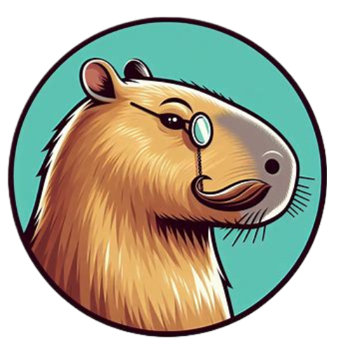
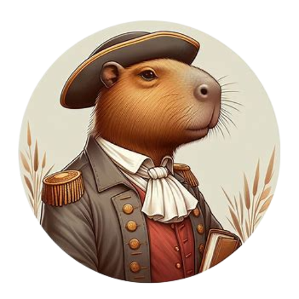
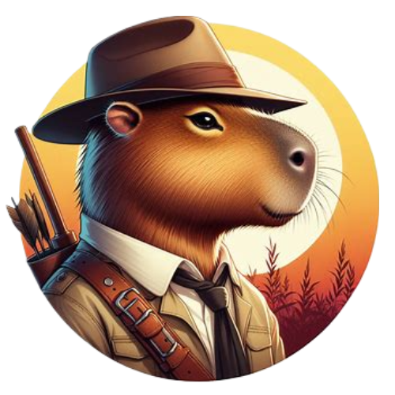

Capypédia
Drogue, manipulation, chantage ,je vous invite à découvrir le monde incroyable et secret des capybaras. Des “petites” créatures qui semblent de prime abord inoffensives mais qui cachent en réalité de lourds secrets.
Rubrique Histoire:
Je suis le capystorien. Je vais vous conter l’histoire des capybaras, notre histoire : de l’animal inconnu vivant paisiblement dans un vaste monde à la star des réseaux sociaux qui prend le contrôle des pensées des internautes. Je vous expliquerai les origines ainsi que les causes de notre ascension fulgurante sans que vous ne le remarquiez.
 Rubrique Habitat:
Rubrique Habitat:
Je suis le capylogiste, je m’occuperai de vous énoncer les lieux où vous pouvez rencontrer mes congénères ainsi que leur comportement et leur importance dans ces différents milieux que ca soit à l'état sauvage ou à la tête d’un pays.
Rubrique Prédateur:
Mon nom est Capy Crockett, le plus grand chasseur de l'espèce des capybaras. Je vais vous énoncez les plus grandes menaces qui nous touchent et la manière dont et la manière dont je suis parvenu à les dompter.
 Rubrique Anachronie:
Rubrique Anachronie:
Je suis le doc Capy Brown. Vous allez me suivre afin de découvrir que certains des noms les plus connus de votre histoire ne sont pas ce qu’ils semblaient être. En plus de leurs mystères, ils cachent tous le même secret qui les lie à la confrérie des francs-capy.